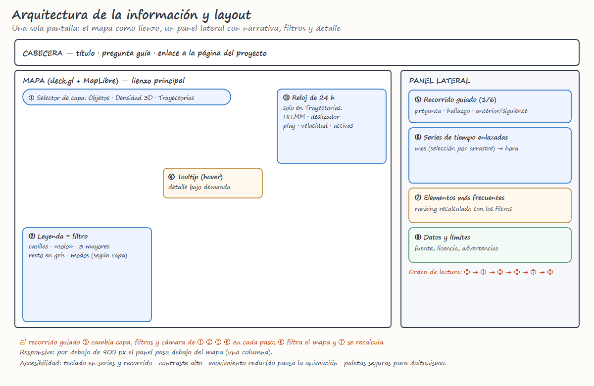
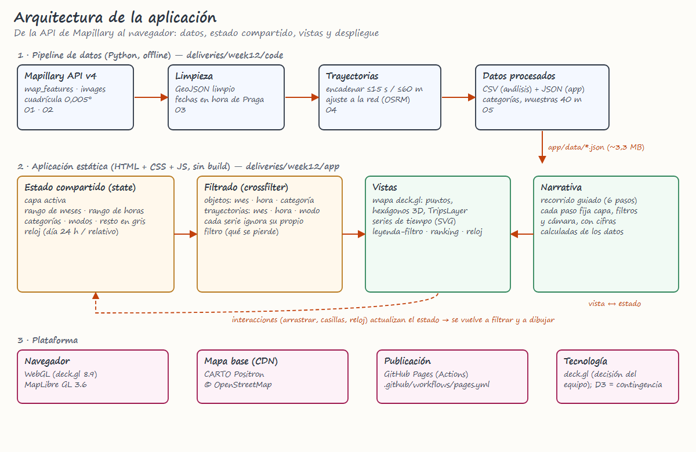

Bocetos candidatos


Praga a pie de calle · Delivery 15
DS5343 Data Visualization · UTEC · 2026-2
Delivery 1 · Semana 7
Jeffry Arturo Hilario Quintana · [Completar integrantes]
Los datos colaborativos describen, sobre todo, a quien captura la ciudad.

Mapa + panel lateral.
Leyenda = filtro.
En móvil: una columna.

| Prioridad | Tarea |
|---|---|
| 1–2 | Pipeline de datos · mapa de objetos con leyenda-filtro |
| 3–4 | Series enlazadas · trayectorias y reloj de 24 h |
| 5–6 | Densidad 3D · recorrido guiado |
| 7–9 | Dispositivos · lotes 3–5 · pruebas de usabilidad |
| 10 | Paper, videos, póster, página del proyecto |
Tecnología: deck.gl; contingencia: portar series y leyenda a D3.
| Semana | Hito |
|---|---|
| 10 · 14 oct | Prototipo funcional |
| 12 · 28 oct | Borrador refinado y crítica de pares |
| 13–14 · nov | Pulido, paper, videos, póster |
| 15 · 18 nov | Entrega final y exposición |